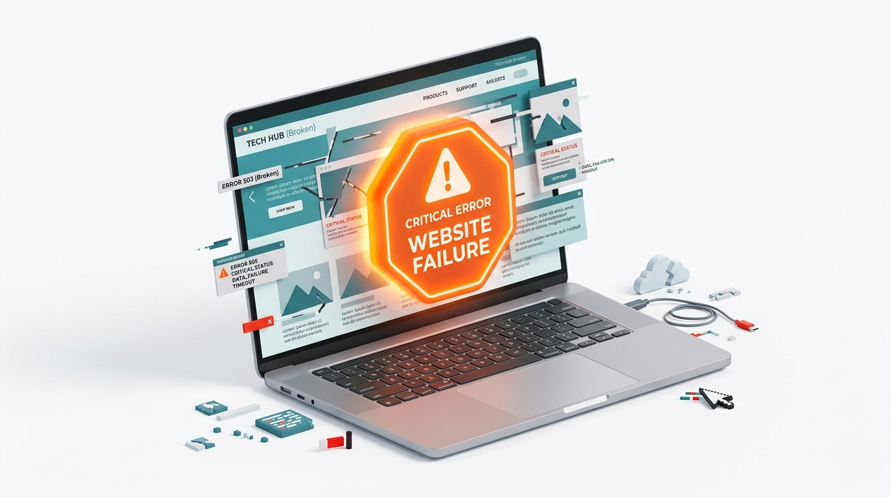

🔴 Severity: High
Critical Issues
These block real people from using the page — screen reader users, keyboard-only users, and people with low vision are hit hardest by these. Fix these first.
Critical issue list
0
critical issue(s) found
No critical issues!
Nothing high-severity was found on this scan. Check the Warnings tab for moderate-priority items.
View Warnings →No scan results yet
Run a scan first, then come back here to see your critical issues.
Scan a website